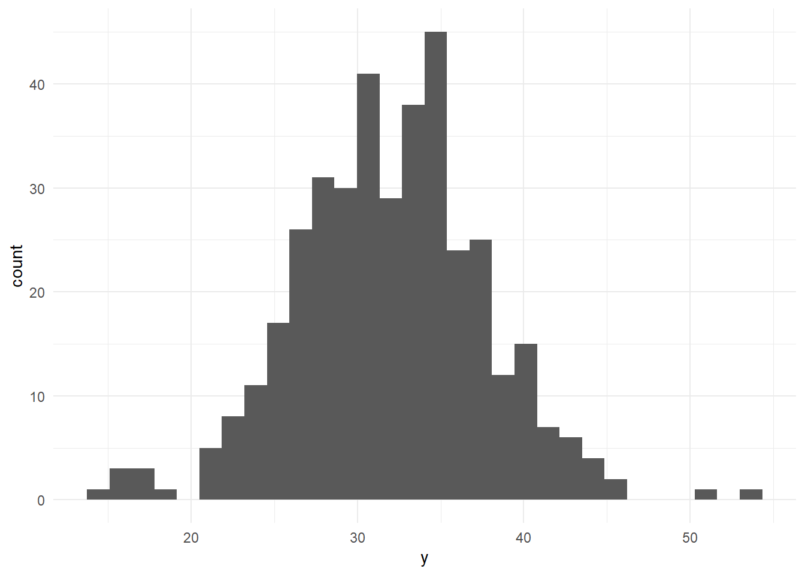
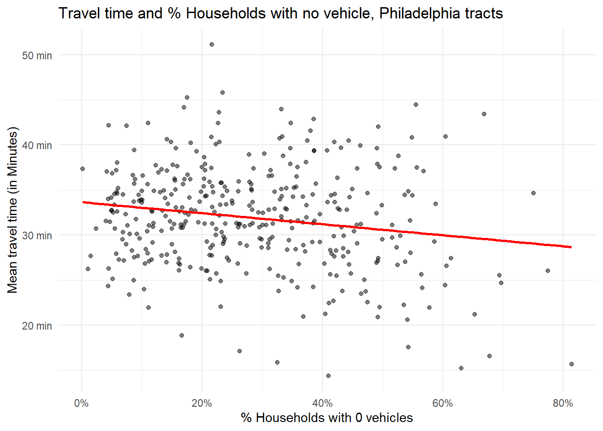
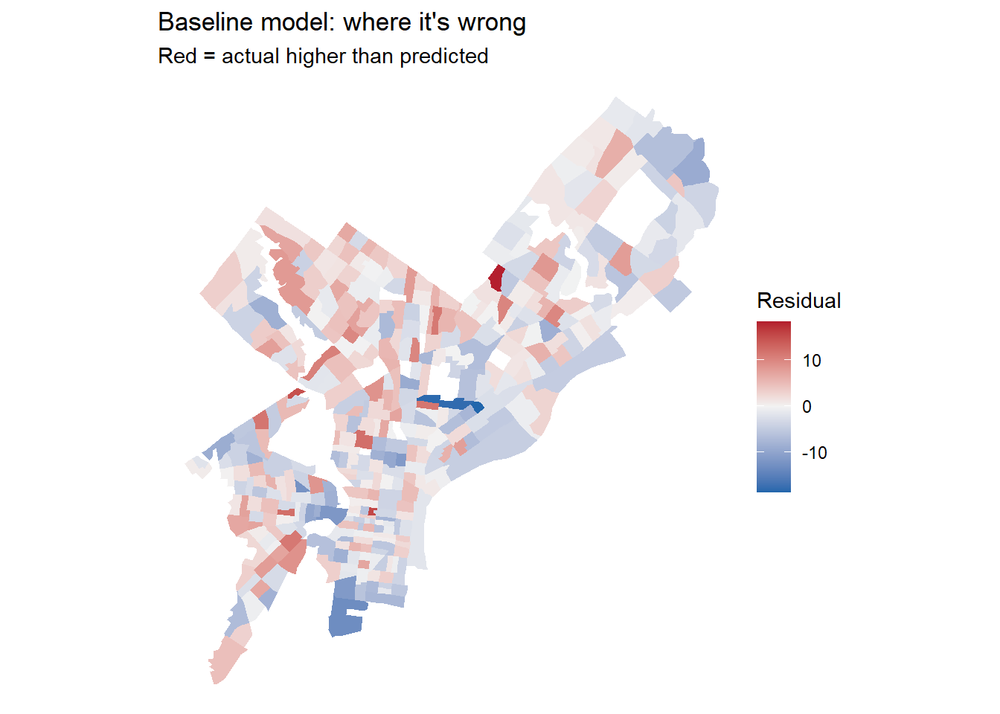
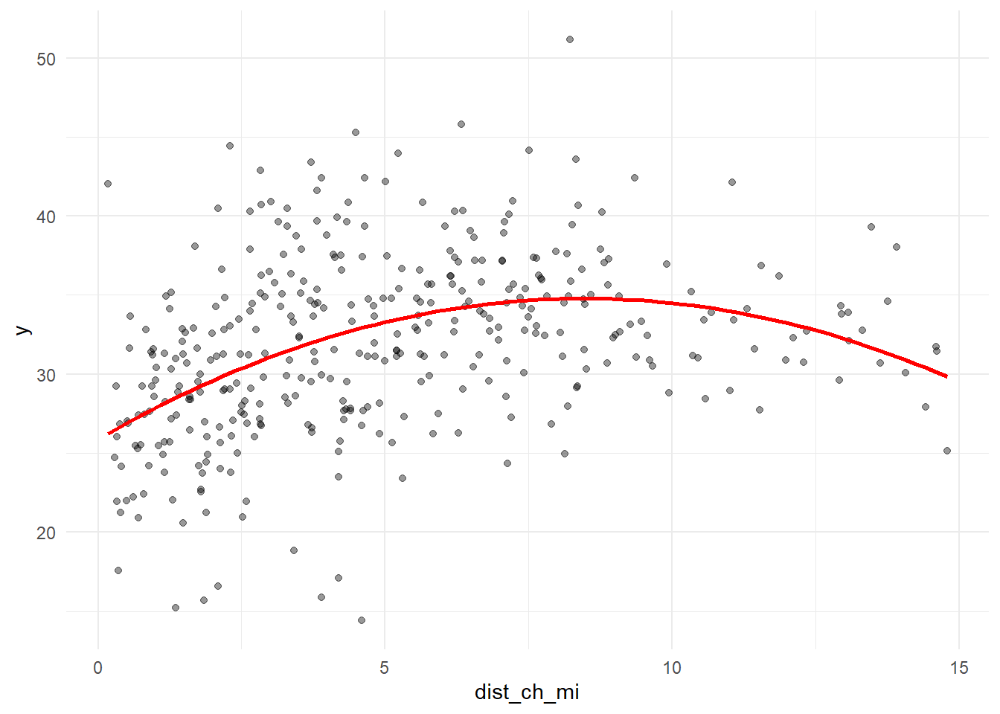
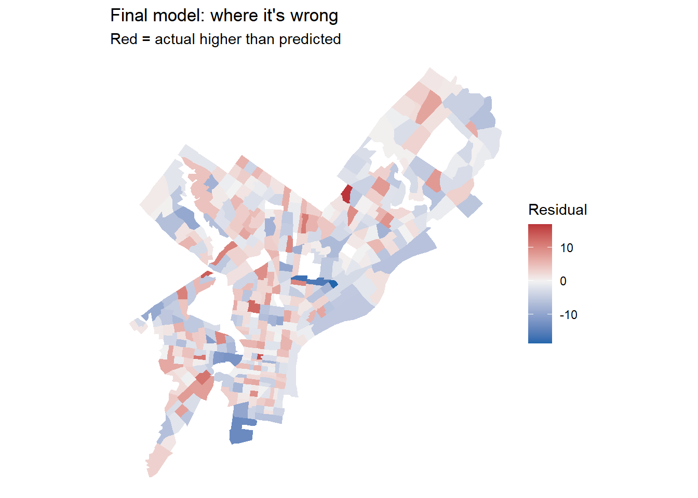
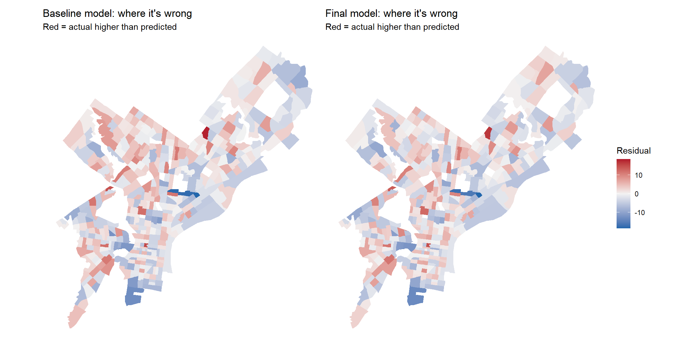
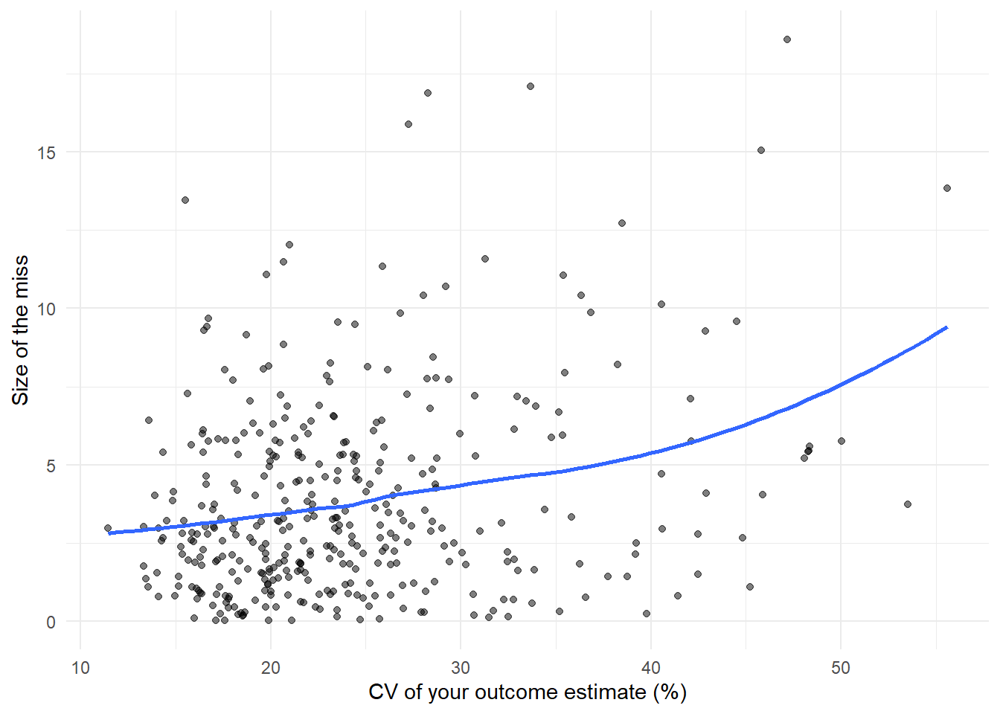

Code
library(tidyverse)
library(tidycensus)
library(sf)
library(caret)
Sys.getenv("CENSUS_API_KEY") != "" # should print TRUE[1] TRUEMUSA 5080 · Predicting tract-level commute times in Philadelphia
This is not a competition. There’s no leaderboard and no target RMSE. The goal is to practice the full prediction workflow on a question you choose, and to find out what actually helps. Some features you’re sure will help won’t, and some you add on a whim will. Both are findings.
You’ll:
Timing. Parts 1–4 use only what we’ve covered through Week 5. You can finish them before the October 9 lecture. Part 5 is new material; the lecture explains it, and the instructions below give you the essentials.
Type the code yourself. The worked examples show the pattern. Your job is to apply it to your outcome and your data choices.
Every model is cross-validated on the same tracts with the same folds, so the rows in your model log are comparable. If a new variable has missing values, fill them (for example, 0 for a count, or the median with a note) or choose a different variable. The cv_rmse() helper below will stop and tell you if you break this rule.
Your outcome comes from the 2019–2023 ACS. Pull open data from 2023 or earlier (2021–2023 is ideal). Using 2025 data to predict a 2023 outcome uses information from the future, which a real prediction model would never have.
Don’t use any variable that’s built from your outcome or measures the same thing another way. Ask yourself: would an agency trying to predict this outcome for a tract have this variable? If the answer is “only because it’s basically the outcome,” leave it out.
library(tidyverse)
library(tidycensus)
library(sf)
library(caret)
Sys.getenv("CENSUS_API_KEY") != "" # should print TRUE[1] TRUEThis function runs 10-fold cross-validation with the same seed every time, so every model in your log is tested on the same folds. You don’t need to change it. Read it once so you know what it does.
ctrl <- trainControl(method = "cv", number = 10)
cv_rmse <- function(formula, data) {
df <- if (inherits(data, "sf")) st_drop_geometry(data) else data
vars <- all.vars(formula)
bad <- vars[sapply(vars, function(v) any(is.na(df[[v]])))]
if (length(bad) > 0) {
stop("These variables have NAs: ", paste(bad, collapse = ", "),
". Fill them or choose another variable (Rule 1: don't drop rows).")
}
set.seed(5080)
fit <- train(formula, data = df, method = "lm", trControl = ctrl)
fit$results$RMSE
}Every time you fit a new model, add a row. By the end, this table is the story of your assignment.
model_log <- tibble(
model = character(),
added = character(),
cv_rmse = numeric(),
notes = character()
)Pick a tract-level ACS variable for Philadelphia that matters for policy. Two outcomes are off limits: median gross rent (we did it in lab) and median home value (save it for A4).
Some ideas if you’re stuck:
| Outcome | Why an agency might care | ACS table |
|---|---|---|
| % of households with no vehicle | Transit planning | B08201 or B25044 |
| Mean travel time to work | Access to jobs | B08013_001 ÷ B08303_001 |
| % of people below poverty | Targeting services | B17001 |
| % of housing units vacant | Housing and blight | B25002 |
| % of households overcrowded | Housing conditions | B25014 |
Use load_variables(2023, "acs5") to browse and find exact variable codes.
Choose three to five ACS predictors for your baseline model. They should be things that plausibly relate to your outcome, but none of them may be built from your outcome (Rule 3).
philly_tracts <- get_acs(
geography = "tract",
state = "PA",
county = "Philadelphia",
variables = c(
total_pop = "B01003_001",
total_traveltime = "B08013_001", #For mean travel time
num_workers = "B08303_001", #For mean travel time
med_inc = "B19013_001", # median household income
edu_total = "B15003_001", # population 25+
no_vehicle ="B08201_002",
ba = "B15003_022",
ma = "B15003_023",
prof = "B15003_024",
phd = "B15003_025",
total_renter_hh = "B25003_003",
total_occupied_hh = "B25003_001"
),
year = 2023,
output = "wide",
geometry = TRUE
) %>%
st_transform(2272)philly_tracts <- philly_tracts %>%
mutate(
y = total_traveltimeE/ num_workersE,
y_moe = moe_ratio(total_traveltimeE, num_workersE,
total_traveltimeM, num_workersM), #Calculte Margin of Error
y_cv = (y_moe/1.645) / y * 100, #Calculte CV
pct_renter = total_renter_hhE/ total_occupied_hhE * 100,
pct_ba = (baE + maE + profE + phdE ) / edu_totalE * 100,
pct_no_vehicle = no_vehicleE / total_occupied_hhE * 100
) Before you commit, check three things.
# How many tracts have no value for your outcome?
sum(is.na(philly_tracts$y))[1] 22# How reliable is it?
summary(philly_tracts$y_cv) Min. 1st Qu. Median Mean 3rd Qu. Max. NAs
11.44 18.73 22.57 24.41 27.84 55.58 22 philly_tracts %>%
mutate(reliability = case_when(
y_cv < 12 ~ "High",
y_cv <= 40 ~ "Moderate",
TRUE ~ "Low"
)) %>%
st_drop_geometry() %>%
count(reliability) reliability n
1 High 1
2 Low 47
3 Moderate 360# What does the distribution look like?
ggplot(philly_tracts, aes(x = y)) +
geom_histogram(bins = 30) +
theme_minimal()
If more than about a third of tracts have low reliability, consider a different outcome, or one built from larger counts. Write your reasoning either way.
Answer (2–3 sentences): What is your outcome, why would an agency want to predict it, and how reliable is it?
Your answer: My outcome is the average one-way commute time to work, in minutes, for each Philadelphia tract. An agency would want to predict it to find neighborhoods where people face long trips to work and may need better transit. It’s reasonably reliable: only 1 tract is High, about 92% are Moderate, and just 8% are Low, well under the one-third warning line, so I’m keeping it.
Filter once, here, and never again. Every later step uses tracts.
tracts <- philly_tracts %>%
filter(total_popE > 0,
!is.na(y),
!is.na(med_incE),
!is.na(pct_renter),
!is.na(pct_ba),
!is.na(pct_no_vehicle)
)
nrow(philly_tracts)[1] 408nrow(tracts)[1] 380Answer: How many tracts did you lose, and what kinds of places are they?
Your answer: We lost 28 of 408 tracts. About 17 have zero population (parks, the airport, industrial land), and the other 11 have very few residents and no households or workers, so income and commute time are missing. These are mostly non-residential or institutional places, not typical neighborhoods, so dropping them shouldn’t distort the model
Plot your outcome against each predictor before modeling (the Week 3 habit).
ggplot(tracts, aes(x = med_incE, y = y)) +
geom_point(alpha = 0.5) +
geom_smooth(method = "lm", se = FALSE, color = "red") +
scale_x_continuous(labels = scales::dollar) +
scale_y_continuous(labels = scales::label_number(suffix = " min")) +
labs(x = "Median household income", y = "Mean travel time (in Minutes)",
title = "Travel time and income, Philadelphia tracts") +
theme_minimal()
Relationship of Travel time to Income : Travel time falls as income rises, but the cloud is dense at the low-income end with a few high-income outliers, and it fans out and may curve, so a straight line only roughly fits. This is a candidate for a log transform later.
ggplot(tracts, aes(x = pct_renter, y = y)) +
geom_point(alpha = 0.5) +
geom_smooth(method = "lm", se = FALSE, color = "red") +
scale_x_continuous(labels = scales::label_number(suffix = "%")) +
scale_y_continuous(labels = scales::label_number(suffix = " min")) +
labs(x = "% Households occupied by Renters", y = "Mean travel time (in Minutes)",
title = "Travel time and % Renters, Philadelphia tracts") +
theme_minimal()
Relationship of Travel time to Renters : Slight negative slope. The line is nearly flat and the points are widely scattered, so this looks like a weak predictor on its own.
ggplot(tracts, aes(x = pct_ba, y = y)) +
geom_point(alpha = 0.5) +
geom_smooth(method = "lm", se = FALSE, color = "red") +
scale_x_continuous(labels = scales::label_number(suffix = "%")) +
scale_y_continuous(labels = scales::label_number(suffix = " min")) +
labs(x = "% with atleast a Bachelors Degree", y = "Mean travel time (in Minutes)",
title = "Travel time and % Education, Philadelphia tracts") +
theme_minimal()
Relationship of Travel time to Education : A steady, fairly linear decline, and the clearest downward trend after income. Tracts with more degree holders tend to have shorter commutes, though there is still a lot of spread.
#| label: scatter plot 4
ggplot(tracts, aes(x = pct_no_vehicle, y = y)) +
geom_point(alpha = 0.5) +
geom_smooth(method = "lm", se = FALSE, color = "red") +
scale_x_continuous(labels = scales::label_number(suffix = "%")) +
scale_y_continuous(labels = scales::label_number(suffix = " min")) +
labs(x = "% Households with 0 vehicles", y = "Mean travel time (in Minutes)",
title = "Travel time and % Households with no vehicle, Philadelphia tracts") +
theme_minimal()
Relationship of Travel time to ) vehicle avaiblity : The weakest and flattest of the four. Many tracts with similar shares have very different commute times, so the line explains little by itself.
####Overall: All four relationships are negative but weak, and the large scatter suggests the baseline model will leave a lot of the variation unexplained.
f1 <- y ~ med_incE + pct_ba + pct_renter + pct_no_vehicle
m1 <- lm(f1, data = tracts)
summary(m1)
Call:
lm(formula = f1, data = tracts)
Residuals:
Min 1Q Median 3Q Max
-18.5383 -3.3138 -0.0561 3.1980 18.2395
Coefficients:
Estimate Std. Error t value Pr(>|t|)
(Intercept) 3.712e+01 1.251e+00 29.663 < 2e-16 ***
med_incE -7.752e-06 1.638e-05 -0.473 0.636325
pct_ba -7.307e-02 2.103e-02 -3.475 0.000571 ***
pct_renter -1.779e-03 1.930e-02 -0.092 0.926580
pct_no_vehicle -6.732e-02 2.146e-02 -3.137 0.001842 **
---
Signif. codes: 0 '***' 0.001 '**' 0.01 '*' 0.05 '.' 0.1 ' ' 1
Residual standard error: 5.155 on 375 degrees of freedom
Multiple R-squared: 0.1629, Adjusted R-squared: 0.1539
F-statistic: 18.24 on 4 and 375 DF, p-value: 1.052e-13model_log <- model_log %>%
add_row(model = "m1", added = "ACS baseline",
cv_rmse = cv_rmse(f1, tracts),
notes = "4 ACS predictors, all linear")
model_log# A tibble: 1 × 4
model added cv_rmse notes
<chr> <chr> <dbl> <chr>
1 m1 ACS baseline 5.15 4 ACS predictors, all linearOn tracts it hasn’t seen, the baseline model misses its predictions miss by about 5 minutes, typically.
Save this map. You’ll compare it to your final model’s map in Part 6.
tracts <- tracts %>% mutate(resid_m1 = residuals(m1))
ggplot(tracts) +
geom_sf(aes(fill = resid_m1), color = NA) +
scale_fill_gradient2(low = "#2166ac", mid = "grey95", high = "#b2182b", midpoint = 0) +
theme_void() +
labs(title = "Baseline model: where it's wrong",
subtitle = "Red = actual higher than predicted",
fill = "Residual")
Answer: Where do the residuals cluster? What might those places have in common that your model doesn’t know about? Use this answer to choose your open data layers in Part 3.
Your answer: The residuals cluster geographically. Reds (longer commutes than predicted) sit in a band through North and West Philadelphia, and blues (shorter than predicted) along the far northeast edge and parts of the south. The model doesn’t know how close these tracts are to jobs and transit, so in Parts 3 and 4 I’ll add SEPTA stop access, a jobs proxy, and distance to Center City.
Many of the city’s datasets on OpenDataPhilly are served through a Carto SQL API. You send a SQL query in a URL, and it sends back data. Ask for format=GeoJSON and st_read() reads the result directly, just like the Indego feed in Week 4.
The pattern:
https://phl.carto.com/api/v2/sql?format=GeoJSON&q=SELECT ... FROM table_name WHERE ...Three pieces of SQL are all you need:
SELECT the_geom, column1, column2 chooses which columns come back. Always include the_geom, or you get no geometry.FROM table_name chooses the dataset.WHERE ... filters rows. Filter in the query, not in R. Some tables have millions of rows, and pulling everything will be slow or fail.This helper builds the URL for you. Spaces and symbols in a URL need encoding, and URLencode() handles that.
carto_get <- function(sql) {
url <- paste0("https://phl.carto.com/api/v2/sql?format=GeoJSON&q=", URLencode(sql))
st_read(url, quiet = TRUE)
}On a dataset’s OpenDataPhilly page, look for the API link. The table name is the word after FROM in the example query. To see what values a column takes before you filter on it, ask for a count in CSV format:
# What kinds of crime are in the incidents table in 2023?
url <- paste0("https://phl.carto.com/api/v2/sql?format=csv&q=",
URLencode("SELECT text_general_code, COUNT(*) AS n
FROM incidents_part1_part2
WHERE dispatch_date >= '2023-01-01' AND dispatch_date < '2024-01-01'
GROUP BY text_general_code ORDER BY n DESC"))
read_csv(url)# A tibble: 32 × 2
text_general_code n
<chr> <dbl>
1 Thefts 37054
2 Other Assaults 25986
3 Motor Vehicle Theft 22478
4 Vandalism/Criminal Mischief 17346
5 All Other Offenses 13334
6 Theft from Vehicle 13002
7 Fraud 7661
8 Aggravated Assault No Firearm 5134
9 Burglary Residential 3800
10 Aggravated Assault Firearm 3320
# ℹ 22 more rowsburglary <- carto_get(
"SELECT the_geom, text_general_code, dispatch_date
FROM incidents_part1_part2
WHERE dispatch_date >= '2023-01-01' AND dispatch_date < '2024-01-01'
AND text_general_code = 'Burglary Residential'"
) %>%
st_transform(st_crs(tracts)) # Carto returns EPSG 4326; translate immediately
nrow(burglary)[1] 3800Some records have no location. Drop them with filter(!st_is_empty(burglary)), and count how many you lost. Every point you drop is a point that won’t be counted.
These tables were available on Carto as of this fall. If a query fails, check the dataset’s OpenDataPhilly page for the current table name.
| Data | Table | Filter on | Notes |
|---|---|---|---|
| Crime incidents | incidents_part1_part2 |
dispatch_date, text_general_code |
Pick specific offense types |
| Shooting victims | shootings |
date_ |
Small enough to pull several years |
| 311 requests | public_cases_fc |
requested_datetime, service_name |
Use the count query above to see service names |
| Indego stations | (not Carto) https://www.rideindego.com/stations/json/ |
— | The Week 4 feed |
Datasets not on Carto often have a GeoJSON download link on their OpenDataPhilly page. st_read() reads those URLs too. For example, navigage to https://opendataphilly.org/, find a dataset that you’d like to import. I found city landmarks. On the page there is a link to a GeoJSON file. I simply right-clicked on that hyperlink and copied it and then used st_read() and pasted the link:
landmarks <- st_read(“https://hub.arcgis.com/api/v3/datasets/6b2fe4a0fbe14e0a8e6afceaea230b8e_0/downloads/data?format=geojson&spatialRefId=4326&where=1%3D1”)
Pull at least two layers that you think relate to your outcome. Base your choice on your Part 2C answer.
septa_trolley <- st_read("https://opendata.arcgis.com/api/v3/datasets/dd2afb618d804100867dfe0669383159_0/downloads/data?format=geojson&spatialRefId=4326", quiet = TRUE) %>%
st_transform(st_crs(tracts))
septa_rail <- st_read("https://opendata.arcgis.com/api/v3/datasets/cf49c62fbc17430aa818e900556d207e_0/downloads/data?format=geojson&spatialRefId=4326", quiet = TRUE) %>%
st_transform(st_crs(tracts))
septa_highspeed <- st_read("https://opendata.arcgis.com/api/v3/datasets/af52d74b872045d0abb4a6bbbb249453_0/downloads/data?format=geojson&spatialRefId=4326", quiet = TRUE) %>%
st_transform(st_crs(tracts))sum(st_is_empty(septa_trolley))[1] 0sum(st_is_empty(septa_rail))[1] 0sum(st_is_empty(septa_highspeed))[1] 0library(lehdr)
jobs <- grab_lodes(state = "pa", year = 2022, lodes_type = "wac",
job_type = "JT00", agg_geo = "tract")jobs_small <- jobs %>%
select(w_tract, jobs = C000) # keep only the tract ID and total jobs
tracts <- tracts %>%
left_join(jobs_small, by = c("GEOID" = "w_tract")) %>%
mutate(jobs = replace_na(jobs, 0))
nrow(tracts) # should still be 380[1] 380summary(tracts$jobs) Min. 1st Qu. Median Mean 3rd Qu. Max.
17.0 323.2 583.5 1617.0 1232.5 43669.0 Answer: Why these layers? What do you expect them to capture that the ACS variables don’t?
Your answer: I chose SEPTA trolley, regional rail and high speed stations plus Census LODES job counts, because commute time depends on how easily residents can reach fast transit and where the jobs are, which my ACS variables don’t capture. I expect tracts near stations and near large job centers to have different commute times than tracts far from them, and these layers should help explain the geographic clusters in my baseline residuals.
Every feature below reuses a Week 4 tool. The worked examples use burglaries and Indego stations; you build the same types from your own layers.
How many burglaries fall in each tract?
tracts <- tracts %>%
mutate(n_burglary = lengths(st_intersects(., burglary)))
summary(tracts$n_burglary) Min. 1st Qu. Median Mean 3rd Qu. Max.
0.000 4.000 7.000 9.458 13.000 48.000 A tract with no burglaries gets 0, not NA, so Rule 1 is safe.
Raw counts mostly measure tract size. A big tract has more of everything. Normalize by area, by population, or by housing units, depending on what makes sense for the thing you’re counting.
tracts <- tracts %>%
mutate(
area_sqmi = as.numeric(st_area(.)) / 27878400, # sq ft in a sq mile
burglary_per_sqmi = n_burglary / area_sqmi,
burglary_per_1k = n_burglary / total_popE * 1000
)If a tract has 40 residents and 3 burglaries, its rate is 75 per 1,000, which is a huge number built on tiny counts. Look at the tracts with the highest per-capita rates before you trust them. This is the Week 3 lesson about small denominators again.
How far is each tract from its nearest Indego station? Use the Week 4 pattern: find the nearest feature, then measure to it element by element.
stations <- st_read("https://www.rideindego.com/stations/json/", quiet = TRUE) %>%
st_transform(st_crs(tracts))
tract_pts <- st_point_on_surface(tracts) # always inside the tract, unlike a centroid
nearest_idx <- st_nearest_feature(tract_pts, stations)
tracts <- tracts %>%
mutate(dist_station_mi = as.numeric(
st_distance(tract_pts, stations[nearest_idx, ], by_element = TRUE)) / 5280)Sometimes the “thing” is a single location, such as City Hall as a stand-in for the center of the regional economy.
city_hall <- st_sfc(st_point(c(-75.1636, 39.9526)), crs = 4326) %>%
st_transform(st_crs(tracts))
tracts <- tracts %>%
mutate(dist_ch_mi = as.numeric(st_distance(tract_pts, city_hall)) / 5280)Build at least three spatial features from your own layers, and use at least two types (count, density, nearest distance, distance to a place). After each one, fit a model, cross-validate it, and log it.
tracts <- tracts %>%
mutate(
n_trolley = lengths(st_is_within_distance(., septa_trolley, dist = 2640)),
n_highspeed = lengths(st_is_within_distance(., septa_highspeed, dist = 2640)),
n_rail = lengths(st_is_within_distance(., septa_rail, dist = 2640)),
n_transit = n_trolley + n_highspeed + n_rail
)
f2 <- y ~ med_incE + pct_ba + pct_renter + pct_no_vehicle + n_transit
model_log <- model_log %>%
add_row(model = "m2", added = "Station locations for SEPTA trolley, highspeed and rail",
cv_rmse = cv_rmse(f2, tracts),
notes = "Add modes of transport")
# repeat for each feature
model_log# A tibble: 2 × 4
model added cv_rmse notes
<chr> <chr> <dbl> <chr>
1 m1 ACS baseline 5.15 4 ACS p…
2 m2 Station locations for SEPTA trolley, highspeed and rail 5.16 Add mod…tracts <- tracts %>%
mutate(area_sqmi = as.numeric(st_area(.)) / 27878400,
pop_per_sqmi = total_popE / area_sqmi
)
f3 <- y ~ med_incE + pct_ba + pct_renter + pct_no_vehicle + n_transit + pop_per_sqmi
model_log <- model_log %>%
add_row(model = "m3", added = "Density of the tract",
cv_rmse = cv_rmse(f3, tracts),
notes = "Adjusting Density")
# repeat for each feature
model_log# A tibble: 3 × 4
model added cv_rmse notes
<chr> <chr> <dbl> <chr>
1 m1 ACS baseline 5.15 4 ACS p…
2 m2 Station locations for SEPTA trolley, highspeed and rail 5.16 Add mod…
3 m3 Density of the tract 5.12 Adjusti… #| label: density-of-jobs
tracts <- tracts %>%
mutate(jobs_per_sqmi = jobs / area_sqmi)
f4 <- update(f3, . ~ . + jobs_per_sqmi)
model_log <- model_log %>%
add_row(model = "m4", added = "Job density",
cv_rmse = cv_rmse(f4, tracts),
notes = "jobs per square mile")
# repeat for each feature
model_log# A tibble: 4 × 4
model added cv_rmse notes
<chr> <chr> <dbl> <chr>
1 m1 ACS baseline 5.15 4 ACS p…
2 m2 Station locations for SEPTA trolley, highspeed and rail 5.16 Add mod…
3 m3 Density of the tract 5.12 Adjusti…
4 m4 Job density 5.20 jobs pe…CV RMSE rose; job density is very skewed, try log in Part 5
#| label: density-of-jobs-2
tracts <- tracts %>%
mutate(jobs_per_sqmi = jobs / area_sqmi)
f5 <- update(f4, . ~ . - jobs_per_sqmi + log1p(jobs_per_sqmi))
model_log <- model_log %>%
add_row(model = "m5", added = "log of job density",
cv_rmse = cv_rmse(f5, tracts),
notes = "log1p(jobs per sq mile) replaces the raw version")
model_log# A tibble: 5 × 4
model added cv_rmse notes
<chr> <chr> <dbl> <chr>
1 m1 ACS baseline 5.15 4 ACS p…
2 m2 Station locations for SEPTA trolley, highspeed and rail 5.16 Add mod…
3 m3 Density of the tract 5.12 Adjusti…
4 m4 Job density 5.20 jobs pe…
5 m5 log of job density 5.12 log1p(j…f6 <- update(f5, . ~ . - med_incE + log(med_incE))
model_log <- model_log %>%
add_row(model = "m6", added = "log of median income",
cv_rmse = cv_rmse(f6, tracts),
notes = "log(med_incE) replaces raw income")
model_log# A tibble: 6 × 4
model added cv_rmse notes
<chr> <chr> <dbl> <chr>
1 m1 ACS baseline 5.15 4 ACS p…
2 m2 Station locations for SEPTA trolley, highspeed and rail 5.16 Add mod…
3 m3 Density of the tract 5.12 Adjusti…
4 m4 Job density 5.20 jobs pe…
5 m5 log of job density 5.12 log1p(j…
6 m6 log of median income 5.13 log(med…f7 <- update(f3, . ~ . - n_transit)
model_log <- model_log %>%
add_row(model = "m7", added = "drop transit count",
cv_rmse = cv_rmse(f7, tracts),
notes = "f3 without n_transit")
model_log# A tibble: 7 × 4
model added cv_rmse notes
<chr> <chr> <dbl> <chr>
1 m1 ACS baseline 5.15 4 ACS p…
2 m2 Station locations for SEPTA trolley, highspeed and rail 5.16 Add mod…
3 m3 Density of the tract 5.12 Adjusti…
4 m4 Job density 5.20 jobs pe…
5 m5 log of job density 5.12 log1p(j…
6 m6 log of median income 5.13 log(med…
7 m7 drop transit count 5.11 f3 with…city_hall <- st_sfc(st_point(c(-75.1636, 39.9526)), crs = 4326) %>%
st_transform(st_crs(tracts))
tract_pts <- st_point_on_surface(tracts)
tracts <- tracts %>%
mutate(dist_ch_mi = as.numeric(st_distance(tract_pts, city_hall)) / 5280)
f8 <- update(f3, . ~ . + dist_ch_mi)
model_log <- model_log %>%
add_row(model = "m8", added = "distance to City Hall",
cv_rmse = cv_rmse(f8, tracts),
notes = "f3 plus miles to City Hall")
model_log# A tibble: 8 × 4
model added cv_rmse notes
<chr> <chr> <dbl> <chr>
1 m1 ACS baseline 5.15 4 ACS p…
2 m2 Station locations for SEPTA trolley, highspeed and rail 5.16 Add mod…
3 m3 Density of the tract 5.12 Adjusti…
4 m4 Job density 5.20 jobs pe…
5 m5 log of job density 5.12 log1p(j…
6 m6 log of median income 5.13 log(med…
7 m7 drop transit count 5.11 f3 with…
8 m8 distance to City Hall 5.11 f3 plus…Answer: Which spatial feature helped most? Did any feature you expected to help do nothing, or make CV RMSE worse? Why might that be?
Your answer: Tract density helped the most. It was the only feature that lowered CV RMSE (5.151 to 5.118). I expected job density to help a lot, but it made things worse (5.201), and even the logged version didn’t beat the model without it. Transit stations didn’t help either, probably because they sit in dense areas that density already captures.
Watch the October 9 recorded lecture before you start this part. Below is a summary to work from.
So far, every predictor has entered the model as a straight line: each additional unit of X changes predicted Y by the same amount, everywhere. Transformations let the model bend. For prediction, the question is simply does the bend lower CV RMSE? For interpretation, each transformation changes what a coefficient means, so you need to know how to read it.
Keep your outcome y untransformed in this assignment. If you model log(y), your CV RMSE comes out in log units and can’t be compared to the other rows in your log. (Predicting a logged outcome well requires back-transforming, which is an A4 topic.)
Many urban variables are skewed: a few tracts have huge values, and most have small ones. Income, density, and counts are typical. A log compresses the long tail, so a model can use the difference between 1 and 10 as well as the difference between 100 and 1,000.
ggplot(tracts, aes(x = jobs_per_sqmi)) + geom_histogram(bins = 30) + theme_minimal()
ggplot(tracts, aes(x = log1p(jobs_per_sqmi))) + geom_histogram(bins = 30) + theme_minimal()
ggplot(tracts, aes(x = pop_per_sqmi)) + geom_histogram(bins = 30) + theme_minimal()
ggplot(tracts, aes(x = log1p(pop_per_sqmi))) + geom_histogram(bins = 30) + theme_minimal()
log(0) is -Inf, and it will break your model. Counts and densities often include zeros. Use log1p(x), which computes log(x + 1), for anything that can be 0.
Reading the coefficient: when a predictor is logged, a 1% increase in X goes with a change of about β/100 in Y, in Y’s units. With log1p, this reading is approximate for small values of X.
If your scatterplot bends (rising and then flattening, or falling and then rising), a squared term lets the line curve. Write it with I(), which tells R to do the arithmetic rather than read ^ as formula syntax.
m_sq <- lm(y ~ dist_ch_mi + I(dist_ch_mi^2), data = tracts)
summary(m_sq)
Call:
lm(formula = y ~ dist_ch_mi + I(dist_ch_mi^2), data = tracts)
Residuals:
Min 1Q Median 3Q Max
-18.5194 -3.0884 -0.0491 2.9256 16.3693
Coefficients:
Estimate Std. Error t value Pr(>|t|)
(Intercept) 25.87577 0.69995 36.968 < 2e-16 ***
dist_ch_mi 2.10433 0.25419 8.279 2.19e-15 ***
I(dist_ch_mi^2) -0.12422 0.01908 -6.511 2.39e-10 ***
---
Signif. codes: 0 '***' 0.001 '**' 0.01 '*' 0.05 '.' 0.1 ' ' 1
Residual standard error: 5.054 on 377 degrees of freedom
Multiple R-squared: 0.1911, Adjusted R-squared: 0.1868
F-statistic: 44.54 on 2 and 377 DF, p-value: < 2.2e-16Reading the coefficient: you can’t read either coefficient alone anymore. The effect of X depends on where you are along X. A positive linear term with a negative squared term means Y rises with X and then levels off or turns down. Plot the fitted curve to see it:
ggplot(tracts, aes(x = dist_ch_mi, y = y)) +
geom_point(alpha = 0.4) +
geom_smooth(method = "lm", formula = y ~ x + I(x^2), se = FALSE, color = "red") +
theme_minimal()
Sometimes a number works better as groups, either because the relationship isn’t smooth or because the categories are meaningful. You can make categories from any variable with case_when() or cut(), and then make sure R treats them as a factor.
tracts <- tracts %>%
mutate(
ring = case_when(
dist_ch_mi < 3 ~ "Core",
dist_ch_mi < 8 ~ "Inner",
TRUE ~ "Outer"
),
ring = factor(ring, levels = c("Core", "Inner", "Outer"))
)
tracts %>% st_drop_geometry() %>% count(ring) ring n
1 Core 129
2 Inner 179
3 Outer 72m_cat <- lm(y ~ ring, data = tracts)
summary(m_cat)
Call:
lm(formula = y ~ ring, data = tracts)
Residuals:
Min 1Q Median 3Q Max
-19.0943 -3.0584 0.0859 3.0684 17.5061
Coefficients:
Estimate Std. Error t value Pr(>|t|)
(Intercept) 28.7964 0.4533 63.531 < 2e-16 ***
ringInner 4.6945 0.5946 7.896 3.19e-14 ***
ringOuter 4.8470 0.7573 6.400 4.61e-10 ***
---
Signif. codes: 0 '***' 0.001 '**' 0.01 '*' 0.05 '.' 0.1 ' ' 1
Residual standard error: 5.148 on 377 degrees of freedom
Multiple R-squared: 0.1608, Adjusted R-squared: 0.1563
F-statistic: 36.11 on 2 and 377 DF, p-value: 4.477e-15Reading the coefficients: R turns a factor with k categories into k − 1 dummy variables. The category left out is the reference level (here, “Core,” the first level). Each coefficient is the difference from the reference: ringOuter is how much higher or lower predicted Y is in outer tracts compared to core tracts, holding everything else in the model constant. To change the reference, use relevel(ring, ref = "Outer").
If a category has only a handful of tracts, its coefficient is unstable, and in cross-validation some folds may not contain it at all. Aim for at least 20 tracts per category.
Try at least one of each: a log, a squared term, and a categorical variable. Choose which variables to transform based on your plots, not at random. Log each model.
f_log <- update(f3, . ~ . + log1p(jobs_per_sqmi))
model_log <- model_log %>%
add_row(model = "m11", added = "log of job density",
cv_rmse = cv_rmse(f_log, tracts),
notes = "f3 plus log1p(jobs_per_sqmi), jobs skewed with zeros")
model_log# A tibble: 9 × 4
model added cv_rmse notes
<chr> <chr> <dbl> <chr>
1 m1 ACS baseline 5.15 4 ACS p…
2 m2 Station locations for SEPTA trolley, highspeed and rail 5.16 Add mod…
3 m3 Density of the tract 5.12 Adjusti…
4 m4 Job density 5.20 jobs pe…
5 m5 log of job density 5.12 log1p(j…
6 m6 log of median income 5.13 log(med…
7 m7 drop transit count 5.11 f3 with…
8 m8 distance to City Hall 5.11 f3 plus…
9 m11 log of job density 5.12 f3 plus…# squared term
f_sq <- update(f8, .~. + I(dist_ch_mi^2))
model_log <- model_log %>%
add_row(model = "m9", added = "distance from City hall squared",
cv_rmse = cv_rmse(f_sq, tracts),
notes = "f8 + distance form City hall squared, plot bent up then down")
# categorical
f_cat <- update(f3, .~. + ring)
model_log <- model_log %>%
add_row(model = "m10", added = "distance ring (Core/Inner/ Outer)",
cv_rmse = cv_rmse(f_cat, tracts),
notes = "f3 + rings, Core reference")
model_log# A tibble: 11 × 4
model added cv_rmse notes
<chr> <chr> <dbl> <chr>
1 m1 ACS baseline 5.15 4 ACS …
2 m2 Station locations for SEPTA trolley, highspeed and rail 5.16 Add mo…
3 m3 Density of the tract 5.12 Adjust…
4 m4 Job density 5.20 jobs p…
5 m5 log of job density 5.12 log1p(…
6 m6 log of median income 5.13 log(me…
7 m7 drop transit count 5.11 f3 wit…
8 m8 distance to City Hall 5.11 f3 plu…
9 m11 log of job density 5.12 f3 plu…
10 m9 distance from City hall squared 5.02 f8 + d…
11 m10 distance ring (Core/Inner/ Outer) 5.06 f3 + r…Answer: Which transformation helped most? For your categorical variable, write one sentence reading one of its coefficients correctly, naming the reference level.
Your answer: The squared distance to City Hall helped the most. It had the lowest CV RMSE of the three and it beat our previous best model m3 (5.118). . The scatterplot showed commute time rising from the center, peaking around 8 to 9 miles, and then falling, and a straight line can’t capture that. The ring also helped but not as much as squared distance to City Hall.
Combine the features and transformations that earned their place, judged by CV RMSE, not p-values.
f_final <- update(f8, . ~ . + I(dist_ch_mi^2))
m_final <- lm(f_final, data = tracts)
summary(m_final)
Call:
lm(formula = f_final, data = tracts)
Residuals:
Min 1Q Median 3Q Max
-18.588 -2.980 0.125 3.014 16.885
Coefficients:
Estimate Std. Error t value Pr(>|t|)
(Intercept) 2.908e+01 2.389e+00 12.172 < 2e-16 ***
med_incE 1.089e-05 1.640e-05 0.664 0.5072
pct_ba -4.741e-02 2.162e-02 -2.193 0.0289 *
pct_renter -4.990e-04 1.894e-02 -0.026 0.9790
pct_no_vehicle 1.279e-02 2.874e-02 0.445 0.6565
n_transit -4.944e-02 1.104e-01 -0.448 0.6545
pop_per_sqmi -3.215e-05 2.558e-05 -1.257 0.2096
dist_ch_mi 1.519e+00 3.576e-01 4.248 2.74e-05 ***
I(dist_ch_mi^2) -9.090e-02 2.307e-02 -3.941 9.71e-05 ***
---
Signif. codes: 0 '***' 0.001 '**' 0.01 '*' 0.05 '.' 0.1 ' ' 1
Residual standard error: 5.014 on 371 degrees of freedom
Multiple R-squared: 0.2167, Adjusted R-squared: 0.1999
F-statistic: 12.83 on 8 and 371 DF, p-value: 2.472e-16model_log <- model_log %>%
add_row(model = "final", added = "best model: f3 + Distance Squared",
cv_rmse = cv_rmse(f_final, tracts),
notes = "Lowest CV RMSE")
model_log# A tibble: 12 × 4
model added cv_rmse notes
<chr> <chr> <dbl> <chr>
1 m1 ACS baseline 5.15 4 ACS …
2 m2 Station locations for SEPTA trolley, highspeed and rail 5.16 Add mo…
3 m3 Density of the tract 5.12 Adjust…
4 m4 Job density 5.20 jobs p…
5 m5 log of job density 5.12 log1p(…
6 m6 log of median income 5.13 log(me…
7 m7 drop transit count 5.11 f3 wit…
8 m8 distance to City Hall 5.11 f3 plu…
9 m11 log of job density 5.12 f3 plu…
10 m9 distance from City hall squared 5.02 f8 + d…
11 m10 distance ring (Core/Inner/ Outer) 5.06 f3 + r…
12 final best model: f3 + Distance Squared 5.02 Lowest…tracts <- tracts %>% mutate(resid_final = residuals(m_final))
ggplot(tracts) +
geom_sf(aes(fill = resid_final), color = NA) +
scale_fill_gradient2(low = "#2166ac", mid = "grey95", high = "#b2182b", midpoint = 0) +
theme_void() +
labs(title = "Final model: where it's wrong",
subtitle = "Red = actual higher than predicted",
fill = "Residual")
Put your two residual maps side by side, or put them next to each other in the rendered document. Did the clusters from Part 2C shrink? Where did they stay?
library(patchwork)
m_base <- lm(f1, data = tracts)
tracts <- tracts %>%
mutate(resid_base = residuals(m_base),
resid_final = residuals(m_final))
lim <- max(abs(c(tracts$resid_base, tracts$resid_final)))
map_resid <- function(var, title) {
ggplot(tracts) +
geom_sf(aes(fill = .data[[var]]), color = NA) +
scale_fill_gradient2(low = "#2166ac", mid = "grey95", high = "#b2182b",
midpoint = 0, limits = c(-lim, lim)) +
theme_void() +
labs(title = title,
subtitle = "Red = actual higher than predicted",
fill = "Residual")
}
p_base <- map_resid("resid_base", "Baseline model: where it's wrong")
p_final <- map_resid("resid_final", "Final model: where it's wrong")
p_base + p_final + plot_layout(guides = "collect")
ggplot(tracts, aes(x = y_cv, y = abs(resid_final))) +
geom_point(alpha = 0.5) +
geom_smooth(se = FALSE) +
labs(x = "CV of your outcome estimate (%)", y = "Size of the miss") +
theme_minimal()
Answer in prose, drawing on your model log (incorporate our words of the day for bonus points. just kidding):
Your answer: Distance to City Hall helped the most. Once I let it curve (distance plus distance squared), CV RMSE dropped from 5.15 to 5.02. The scatterplot made sense of it: commutes get longer as you move away from the center, peak around 8 to 9 miles out, then ease off. A straight line can’t do that.
Job density was the big letdown. I expected it to matter, but it actually made predictions worse (5.20), and logging it only got me back to 5.12. I think that’s because jobs show where people work, while my outcome is how long residents take to get there. It also moves a lot with population density, so it didn’t add much new.
For one coefficient, take the share of adults with a bachelor’s degree. Holding everything else constant, each extra percentage point of college graduates goes with a commute about 0.05 minutes shorter. Two similar tracts that are 10 points apart in college share are predicted to differ by about 0.47 minutes, or about 28 seconds, with the more educated tract having the shorter commute.
My final residual map still has a few stubborn spots: one dark red tract in the north-center, and some dark blue ones in the center-right and south. I’d want to know how good the bus service and highway access are there. SEPTA’s schedule data (GTFS, from 2023 or earlier) could show bus frequency, and OpenStreetMap or Census road files could show highway access.
As for noise, the fog plot shows that tracts with shakier commute estimates tend to be missed by more, around 3 minutes at the low end and 9 at the high end. But plenty of reliable tracts are still missed by a lot, so uncertainty explains part of the error, not most of it.